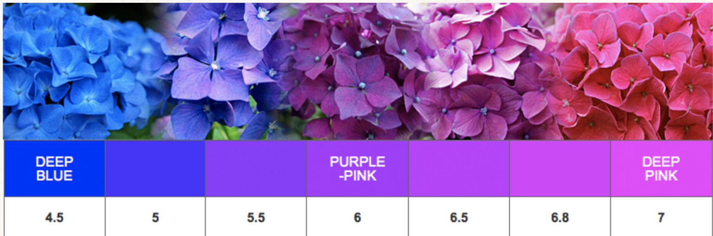
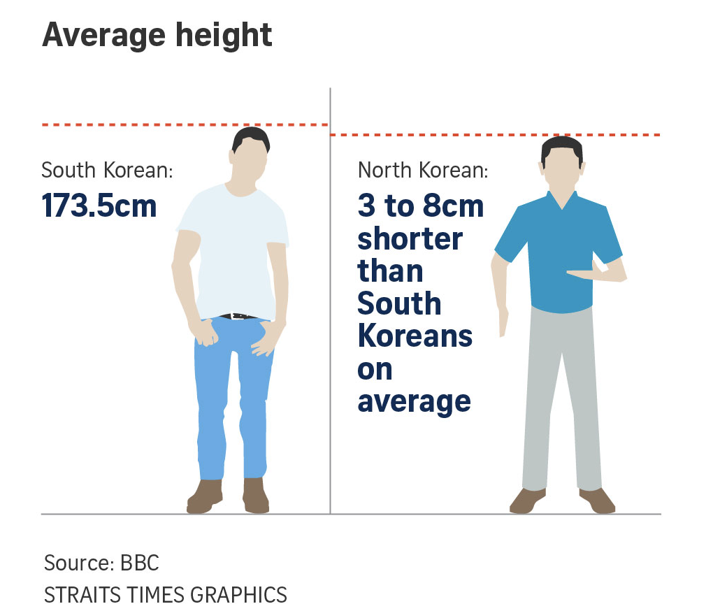
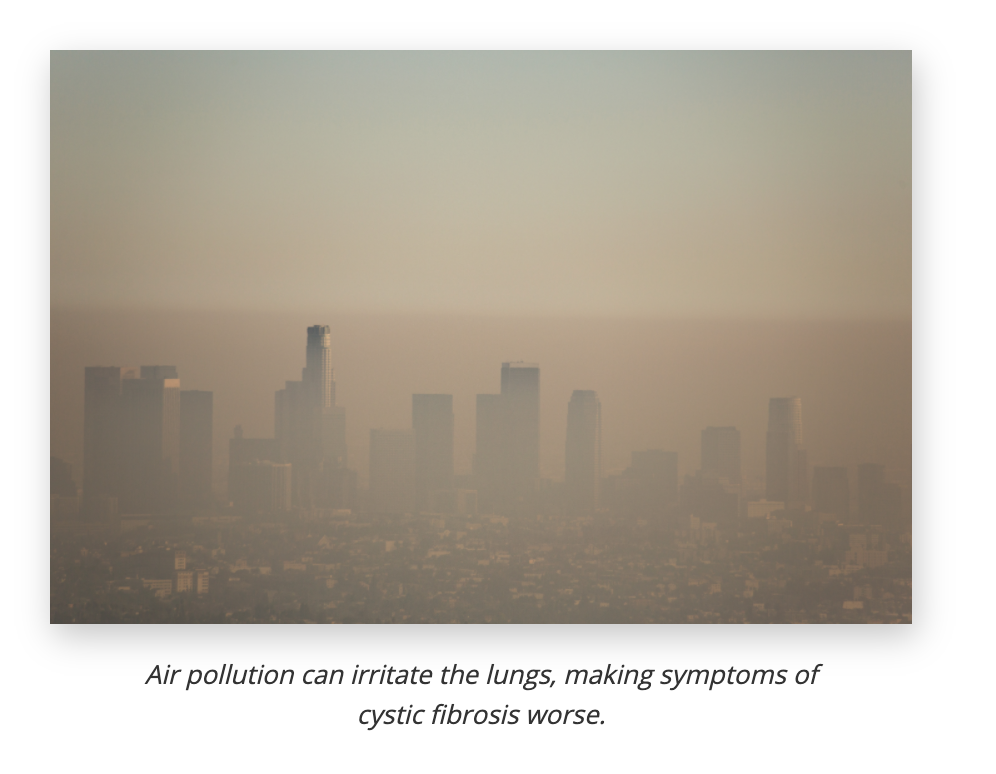
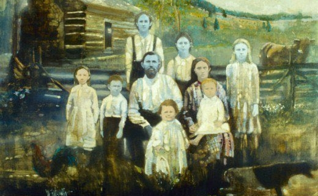

5.6 Pedigrees, Dihybrid Crosses and the Environment
Three last moves. Reading inheritance backwards from a real family. Tracking two genes at once. And finally admitting the thing this unit has quietly been simplifying all along — that genes are never the whole story.
Reading a family tree
You cannot run a controlled cross on people. What you can do is look at a family that already exists and reason backwards from what you can see. That diagram is a pedigree, and it uses a fixed set of symbols:
| Symbol | Meaning |
|---|---|
| Square | Male |
| Circle | Female |
| Unshaded | Does not show the trait |
| Shaded | Shows the trait |
| Horizontal line between two symbols | A couple |
| Vertical line down to a row | Their children |
| Roman numerals down the side | Generations |
The whole skill is in two deductions, and almost every pedigree question turns on one of them:
- Two unaffected parents with an affected child → the trait is recessive, and both parents must be carriers. A dominant allele cannot hide, so it could not have skipped them.
- Two affected parents with an unaffected child → the trait is dominant, and both parents must be heterozygous.
After that, work outwards. Every affected person in a recessive pedigree is aa, and every one of them forces a recessive allele into both of their parents — including anyone who married into the family.
Work one out
Pedigree detective
Interactive- Which single pair of individuals proves the trait is recessive? Name them and give the reasoning in one sentence.
- II-4 married into this family and has no history of the condition. Explain why she must nevertheless be a carrier.
- Two people in this pedigree cannot be assigned a definite genotype. Who are they, and what extra evidence would settle it?
- If II-1 had children with an unaffected, non-carrier partner, what fraction of their children would be affected? What fraction would be carriers?
A shaded symbol tells you the phenotype, never the genotype directly. In a recessive pedigree every shaded individual is aa, so shading does pin the genotype down. In a dominant pedigree a shaded individual could be AA or Aa — and you would have to look at their children to tell.
Two genes at once
Everything so far has tracked one gene. Real organisms inherit thousands simultaneously, and Mendel's third law says that — for genes on different chromosomes — they travel independently. Inheriting tall says nothing about inheriting green.
A cross that follows two genes is a dihybrid cross. The only new difficulty is the gametes: a TtGg parent can make four kinds, not two, because it must contribute one allele of each gene in every possible combination. FOIL — first, outside, inside, last — is a way of not missing any.
Dihybrid cross builder
Interactive- Cross TtGg × TtGg. What phenotype ratio do you get, and how many boxes are in the square?
- Add the "tall, green" and "tall, yellow" counts together. What fraction of the offspring are tall? Where have you seen that fraction before?
- Use the multiplication rule instead of the grid: the chance of tall is ¾ and the chance of green is ¾, so the chance of tall and green is ¾ × ¾. Does it match the square?
- Now cross TtGg × ttgg. Why does 9 : 3 : 3 : 1 disappear?
- Switch to the rabbit and set up the anchor guide's cross: two rabbits heterozygous for both fur colour and ear length. What is the chance of a black offspring with long ears?
The part the genotype does not decide
This unit has been simplifying, and it is time to say so. Genotype does not determine phenotype on its own. For most traits the genotype sets a range, and the environment decides where within that range an organism lands.
The clearest demonstration is a plant whose flowers change colour depending on the soil it grows in.

Human traits behave the same way, just less visibly. Height is strongly heritable, and it is also strongly affected by childhood nutrition:

Other examples worth knowing:
- Skin colour — polygenic, and also darkened by UV exposure.
- Cystic fibrosis severity — the same two alleles produce different outcomes depending on infection history, nutrition and air quality.
- Identical twins — the same genome, yet different heights, weights and disease outcomes. Twins are the cleanest natural experiment in all of genetics for exactly this reason.

Epigenetics goes one step further. Chemical tags added to DNA can switch genes on or off without changing a single base, and some of those tags are laid down in response to diet, stress or toxins — and can occasionally be passed to the next generation. The sequence is unchanged; what is inherited is a pattern of use.
Case study — the blue people of Kentucky

In 1820 Martin Fugate settled in an isolated valley in eastern Kentucky and married Elizabeth Smith. Both, unknowingly, carried a rare recessive allele. Several of their children were born with blue skin, and because the community stayed small and isolated for generations, the allele kept meeting itself.
The cause is methaemoglobinaemia. A gene codes for an enzyme, diaphorase, whose job is to convert methaemoglobin — a form of haemoglobin that cannot carry oxygen — back into normal haemoglobin. With two non-working copies, methaemoglobin builds up, and it is blue rather than red.
Work the chain yourself before reading on. You now have every link:
| Level | What is happening |
|---|---|
| DNA | A recessive mutation in the diaphorase gene |
| Protein | Little or no working diaphorase enzyme |
| Cell | Methaemoglobin accumulates in red blood cells |
| Organism | Blue-tinged skin |
| Family | Autosomal recessive — carriers unaffected, appears when two carriers meet |
| Population | Isolation raised the chance of two carriers marrying |
That table is Unit 5 in one column. And the treatment is a nice final twist: methylene blue, injected, restores normal colour within minutes — a blue dye that cures blueness, by doing chemically what the missing enzyme should have done.
- Construct a pedigree for a couple who are both carriers, with four children of whom one is blue. Label every genotype you can, and mark the ones you cannot.
- Explain why isolation made this condition visible in this valley but not elsewhere, even though the allele exists in other populations.
- Is the blue trait dominant or recessive? Give the evidence, not the answer.
- Explain why methylene blue treats the symptom without curing the condition. What would a cure have to do instead?
Check your understanding
- In a pedigree, two unaffected parents have an affected daughter. State the mode of inheritance, both parents' genotypes, and how you know it is not X-linked.
- Why does a dihybrid cross of two double heterozygotes give sixteen boxes rather than four?
- Show that the 9 : 3 : 3 : 1 ratio is just two 3 : 1 ratios multiplied together.
- A hydrangea with blue flowers is moved to alkaline soil and turns pink. Has its genotype changed? Explain what has changed instead.
- Identical twins raised apart differ in height by several centimetres. What does that tell you about the relationship between genotype and phenotype?
- Take the Fugate family and write the full chain from a single base change to a blue-skinned child, naming each level.
Quick check
This part marks itself, and points you back to the right section if something is shaky.
In a pedigree, two unshaded parents have a shaded daughter. What can you conclude?
This is the deduction almost every pedigree question turns on. From there you work outwards: every affected person in a recessive pedigree is aa, and each of them forces a recessive allele into both parents — including anyone who married into the family.
In a different pedigree, two shaded parents have an unshaded son. What can you conclude?
The two deductions are mirror images, and in both the informative person is the child who breaks the pattern. A dominant allele cannot hide, so an unshaded child proves neither parent could have been carrying two of them.
In a recessive pedigree, the unshaded brother of an affected child cannot be given a definite genotype. Why not?
A shaded symbol gives you a phenotype, never a genotype directly. In a recessive pedigree, shading does pin a genotype down — every affected person is aa. It is the unshaded relatives who stay ambiguous, and saying so is the correct answer rather than a failure.
In a pedigree for a dominant trait, a shaded woman cannot be given a definite genotype. Why not?
Which relatives stay ambiguous flips with the mode of inheritance. In a recessive pedigree the shaded people are the certain ones and the unshaded ones are the puzzle; in a dominant pedigree it is the other way round.
In a TtGg × TtGg cross, what fraction of the offspring are tall and green?
The famous 9 : 3 : 3 : 1 is just two 3 : 1 ratios multiplied together. Once you see that, you can answer most dihybrid questions without drawing sixteen boxes at all — which is a great deal faster under exam conditions.
In that same TtGg × TtGg cross, what fraction of the offspring are tall and yellow?
All four numbers in 9 : 3 : 3 : 1 come out of the same multiplication — ¾×¾, ¾×¼, ¼×¾, ¼×¼. Multiply them out over sixteen and they add back to the whole litter, which is a quick way to check you have not lost a class.
Why does inheriting the tall allele tell you nothing about whether green was inherited?
Independent assortment is a fact about meiosis, not about the traits looking unrelated. It is also why the law has a limit worth knowing: two genes very close together on the same chromosome are inherited together far more often than the rule predicts.
A breeder finds two traits that travel together almost every time, generation after generation. Which explanation fits Mendel's third law rather than contradicting it?
Independent assortment is a statement about chromosomes, not about traits. Two genes on the same chromosome are dealt as a package, so the closer they sit the more often they arrive together — which is exactly what lets geneticists work out where on a chromosome a gene lies.
A blue hydrangea is moved into alkaline soil and its flowers come out pink. What has changed?
One plant, one genotype, every colour in the row. This is the cleanest possible demonstration that genotype does not determine phenotype on its own — and the same logic explains why two people with identical CFTR genotypes can have very different lives.
Two people have exactly the same pair of CFTR alleles, yet one has far more severe symptoms than the other. What is the best explanation?
This is the hydrangea argument moved indoors. The environment does not rewrite the gene; it decides what living with that gene turns out to be like — which is why the air someone breathes shows up in their medical notes.
Identical twins raised apart end up several centimetres different in height. What does that show?
Compare it with the two Koreas: populations with very similar genetics, separated for about seventy years, now differing in average adult height by several centimetres. The genes did not change in seventy years; the food supply did.
Adult men in South Korea are on average several centimetres taller than adult men in North Korea, after about seventy years of separation. What does that comparison show?
What makes the comparison worth anything is the control it provides: genetics held roughly constant, environment varied sharply. It is the twin study run at the scale of a country, and it gives the same answer.
The allele behind the Fugate family's blue skin exists in other populations too. Why did blue skin appear in that one Kentucky valley?
A recessive allele only becomes visible when it meets a copy of itself. Isolation raises that chance sharply, which is the population-level line of the table you just worked through — DNA, protein, cell, organism, family, population.
Later Fugate descendants moved out of the valley and married into large town populations, and blue-skinned children became rare. What happened to the allele?
How common an allele is and how often the trait appears are two different numbers. Anything that makes two carriers more likely to meet — isolation, a small community, marriage between relatives — pushes the second one up while leaving the first alone.
That is the end of the unit. Look back at the four questions you wrote in the overview before you knew any of this, and answer them again. If your new answers use the words gene, allele, protein, carrier and probability — and connect them into a chain rather than a list — you have the unit.